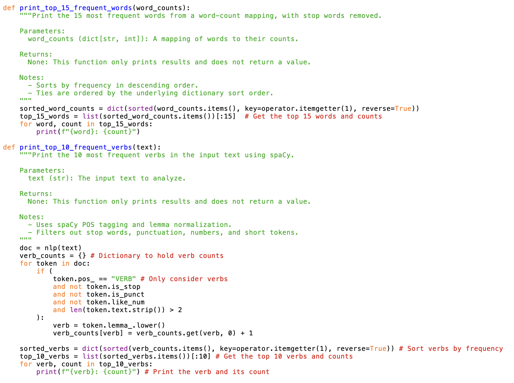

Text Analysis with SpaCy
About the Project
This project uses SpaCy to analyze text by identifying key linguistic features such as tokens, parts of speech, and named entities. The project demonstrates how to leverage SpaCy's powerful NLP capabilities to extract meaningful insights from text data.
Sample Code
The various print functions (top-15 words and top-10 verbs) break down the text into lemmatized tokens and display which ones are used most, giving us an insight to the thematic focus of the text.
